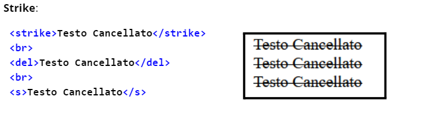
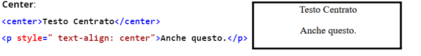
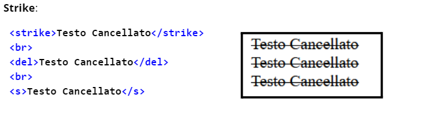
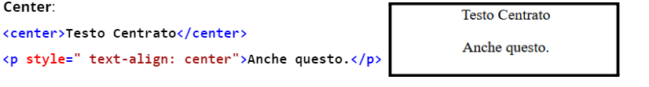

TAG SEMANTICI
Prima di approcciarci sull’argomento , abbiamo bisogno di capire cos’è HTML.
HTML(Hyper Text Markup Language)
Non è un linguaggio di programmazione ma un linguaggio di markup. HTML non è un linguaggio di programmazione, perchè non contiene della logica per creare dinamicità al nostro sito. Possiamo inserire contenuti all’interno della nostra pagina, creando il suo scheletro tramite i TAG.


 


